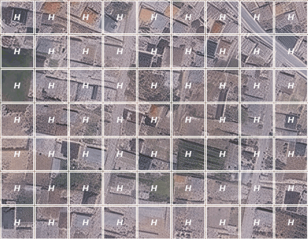
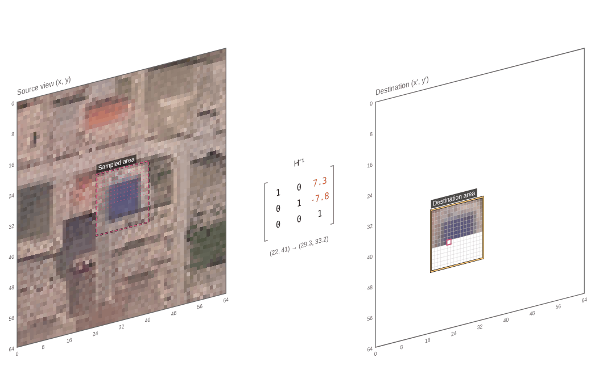
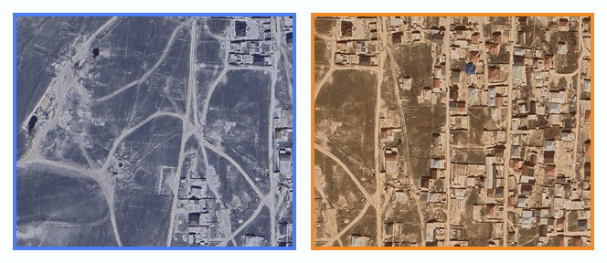

Key points from reference and source are connected
A transformation function, the homography, is computed from the matched points.

A few local homography matrices come out noisy.
Pixels are projected through the homography transformation function.

Overlapping pieces are merged into one seamless image.
